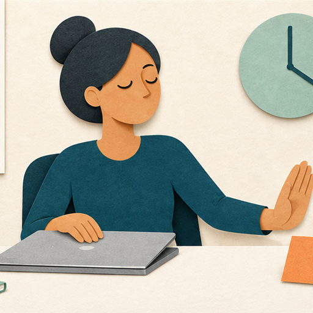
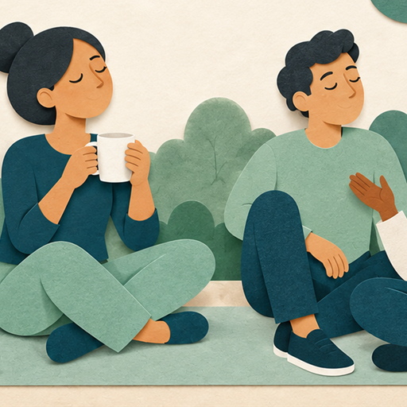

Recognize and respond to signs of stress
Prevention involves recognizing stress early and responding with a strategy that supports your well-being.

Sustain your energy
Open each strategy to review how it can support physical, mental, and social well-being.

Learning check
Decide whether each statement is true or false based on the prevention strategies.